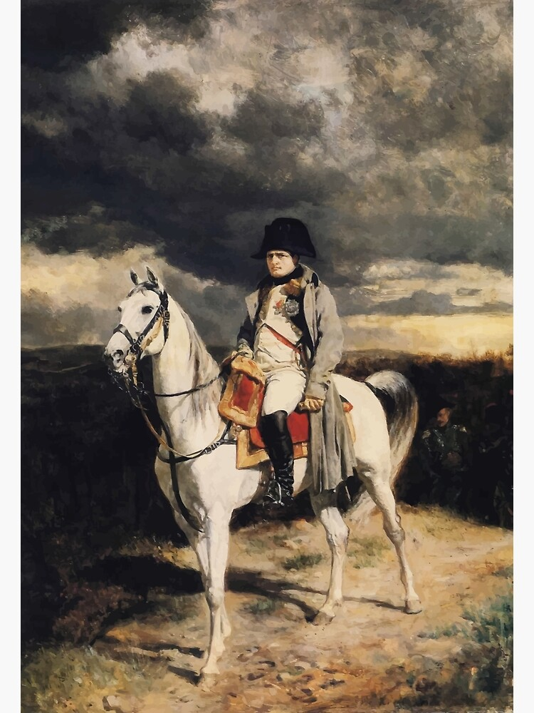

NAPOLEON
NAPOLEON
“The greatest danger occurs at the moment of victory” ― Napoleon Bonaparte
Content
Napoleon's Life

Jacques-Louis David - The Emperor Napoleon in His Study at the Tuileries
Napoleon's Military Genious
Napoleon Boneparte (1769-1821) is one of the greatest military commanders in human history. His accomplishments are well regarded amongst military historians. From a lowly artillery officer serving the French Republic to the Emperor of France and conqueror of Europe, his campaigns still ripple throughout the world. A masterful tactician and brilliant strategist, he served in over 80 battles in his career and only lost 10.
Napoleon's Early Life
Napoleon was born in Corsica, a small island south of France in 1769. In 1779 he left this small island to mainland France and joined the French Royal Army, eventually being comissioned as an officer in 1785. In 1789 he supported the French Revolution and was quickly placed in command of the French army in the battle of Toulons, thus changing the course of history forever.
Map of Corsica, courtesty of Wikipedia
"Napoleon Bonaparte at the Royal Military School of Brienne" by Jacques Marie Gaston Onfroy de Breville
Napoleon's Campaigns
After taking command of the French army at Toulons, he quickly turned the tide of the battle and beat back the Brittish navy at port. His victory here would launch his career as a masterful tactician.

I don't know who painted this but it looks cool
Rise to Emperor
Napoleon Boneparte (1769-1821) is one of the greatest military commanders in human history. His accomplishments are well regarded amongst military historians. From a lowly artillery officer serving the French Republic to the Emperor of France and conqueror of Europe, his campaigns still ripple throughout the world. A masterful tactician and brilliant strategist, he served in over 80 battles in his career and only lost 10.